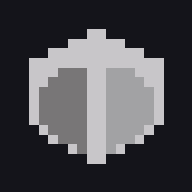

Model Viewer
Assembly
Layout
◐
Fit
Select a part to choose a version, set its colour, or download it for printing.
loading models…
Plan
Render
Paste into case_params.py
Copy these four lines
Download 1:1 paper template
Reset to the exported layout